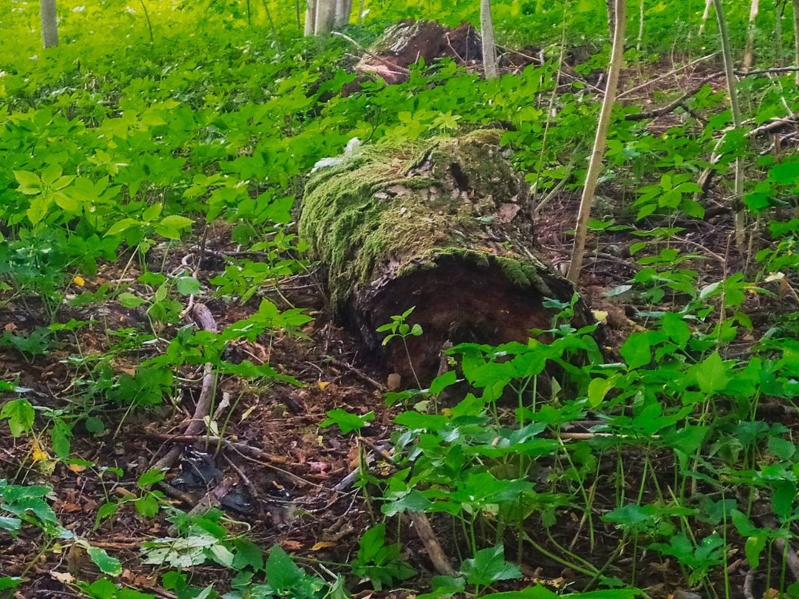

Як змяніць свой лёс? Ці магчыма гэта? Вы самі знойдзеце адказы на гэтыя пытанні, калі наведаеце вялізную ліпу на старажытным капішчы паганскай багіні Лаймы недалёка ад мястэчка Лынтупы на Блакітных азёрах.
Па мясцовым паданні ліпе багіні Лаймы больш за 300 гадоў, але, магчыма, нашмат больш. Ліпа выглядае больш магутнай і старэйшай за падобныя дрэвы, якія налічваюць 500 гадоў. Але да гісторыі дрэва мы яшчэ вернемся.
Багіню Лайму таксама называюць балцкай Фартунай, багіняй ведаў і лёсу ці ж багіняй року. Лайма сочыць за тым, каб усё, прызначанае богам, а гэта значыць рок, які ты ніяк не зменіш, адбыўся. У яе ёсць дзве сястры-багіні. Сярэднюю клічуць Гельцыня, яна з'яўляецца багіняй смерці, але гэтая дзяўчына зусім не злая, а якраз наадварот. Яна можа дапамагчы чалавеку спакойна сысці ў іншы свет або, падмануўшы лёс, і нават самога бога, дапамагчы чалавеку выжыць. Гэтая багіня паўстае ў выяве змяі і апекуецца над медыкамі. Нездарма сімвалам медыцыны з'яўляецца змяя.
А малодшая, якую называюць Зязюляй, ведае, колькі засталося жыць чалавеку. Памятаеце “зязюля, зязюля, колькі мне жыць”? Карані гэтых пытанняў у гісторыі Лаймы.
Недалёка ад святой ліпы, як і на любым паганскім капішчы, ляжыць ахвярны камень. Ён таксама няпросты. Камень мае незвычайную сіметрычную выцягнутую форму, як быццам ён абчасаны па краях. Насамрэч гэта ахвярнік, які Лайма старанна трэ кожны дзень па загадзе бога. Кажуць, што калі Лайма сатрэ ахвярнік да канца, надыдзе канец чалавецтва.


Калі вы дабраліся да гэтага капішча, у вас з'яўляецца выдатная магчымасць змяніць свой лёс. Для гэтага трэба зрабіць паднашэнне Лайме. Дзіўна, але такая магутная багіня аддае перавагу звычайным зямным пачастункам: малаку, беламу хлебу, тваражку. Так расказвала 90-гадовая мясцовая жыхарка, якая жыла побач з капішчам, краязнаўцу Алесю Гарбулю. На ахвярніку багіне Лайме і зараз ляжаць манеткі...
Гэтае ж капішча ў свой час наведаў вядомы літоўскі гісторык і балтазнавец Вікінтас Вайткявічус і пацвердзіў, што гэта капішча менавіта гэтай багіні.
У канцы 90-х тут пабывалі біёлагі Інстытута біялогіі НАН Беларусі. Навукоўцы зрабілі свідраванне ліпы, падчас якога аказалася, што дрэва згніло знутры на 2/3, таму вырашылі не надаваць ёй значэнне помніка прыроды, як задумвалася раней: дрэва ў любы момант можа ўпасці. Дзіўна, але пасля чарговага даследавання навукоўцы вызначылі, што дрэва вылечвае само сябе ўжо на працягу 180 гадоў. Яно нарошчвае новую драўніну ўсярэдзіне велізарнага дупла.
Запісалі Паліна Панчанка і Дар’я Тэррo.